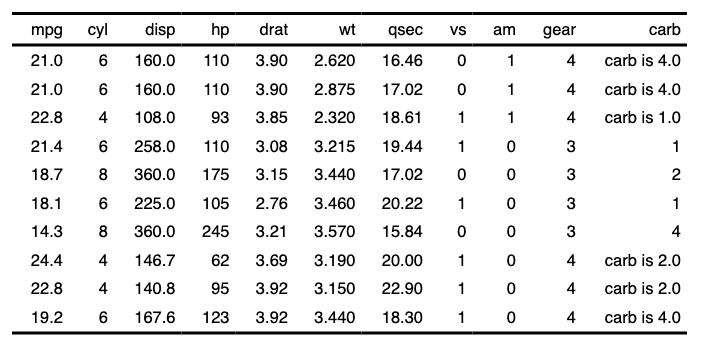

Modify flextable displayed values with eventually mixed content paragraphs.
Function is handling complex formatting as image insertion with
as_image(), superscript with as_sup(), formated
text with as_chunk() and several other chunk functions.
Function mk_par is another name for compose as
there is an unwanted conflict with package 'purrr'.
If you only need to add some content at the end
or the beginning of paragraphs and keep existing
content as it is, functions append_chunks() and
prepend_chunks() should be prefered.
compose(x, i = NULL, j = NULL, value, part = "body", use_dot = FALSE)
mk_par(x, i = NULL, j = NULL, value, part = "body", use_dot = FALSE)Arguments
- x
a flextable object
- i
rows selection
- j
column selection
- value
a call to function
as_paragraph().- part
partname of the table (one of 'all', 'body', 'header', 'footer')
- use_dot
by default
use_dot=FALSE; ifuse_dot=TRUE,valueis evaluated within a data.frame augmented of a column named.containing thejth column.
Illustrations


See also
fp_text_default(), as_chunk(), as_b(), as_word_field(), labelizor()
Other functions for mixed content paragraphs:
append_chunks(),
as_paragraph(),
prepend_chunks()
Examples
ft_1 <- flextable(head(cars, n = 5), col_keys = c("speed", "dist", "comment"))
ft_1 <- mk_par(
x = ft_1, j = "comment",
i = ~ dist > 9,
value = as_paragraph(
colorize(as_i("speed: "), color = "gray"),
as_sup(sprintf("%.0f", speed))
)
)
ft_1 <- set_table_properties(ft_1, layout = "autofit")
ft_1
#> a flextable object.
#> col_keys: `speed`, `dist`, `comment`
#> header has 1 row(s)
#> body has 5 row(s)
#> original dataset sample:
#> speed dist comment
#> 1 4 2
#> 2 4 10
#> 3 7 4
#> 4 7 22
#> 5 8 16
# using `use_dot = TRUE` ----
set.seed(8)
dat <- iris[sample.int(n = 150, size = 10),]
dat <- dat[order(dat$Species),]
ft_2 <- flextable(dat)
ft_2 <- mk_par(ft_2, j = ~ . -Species,
value = as_paragraph(
minibar(., barcol = "white",
height = .1)
), use_dot = TRUE
)
ft_2 <- theme_vader(ft_2)
ft_2 <- autofit(ft_2)
ft_2
#> a flextable object.
#> col_keys: `Sepal.Length`, `Sepal.Width`, `Petal.Length`, `Petal.Width`, `Species`
#> header has 1 row(s)
#> body has 10 row(s)
#> original dataset sample:
#> Sepal.Length Sepal.Width Petal.Length Petal.Width Species
#> 12 4.8 3.4 1.6 0.2 setosa
#> 1 5.1 3.5 1.4 0.2 setosa
#> 96 5.7 3.0 4.2 1.2 versicolor
#> 52 6.4 3.2 4.5 1.5 versicolor
#> 79 6.0 2.9 4.5 1.5 versicolor